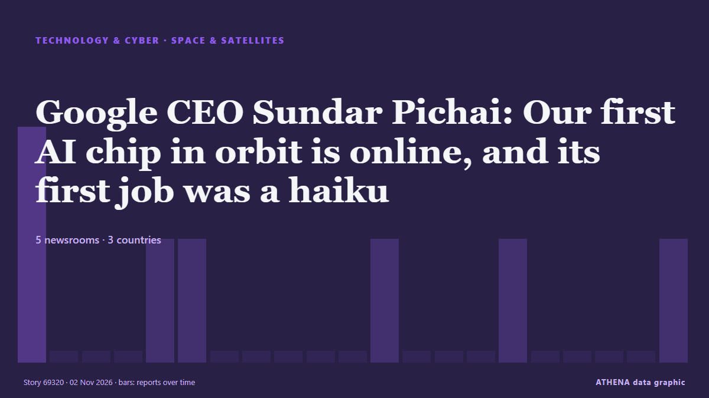

Space & satellites
| 20 Oct | 0 |
|---|---|
| 21 Oct | 0 |
| 22 Oct | 0 |
| 23 Oct | 0 |
| 24 Oct | 0 |
| 25 Oct | 0 |
| 26 Oct | 1 |
| 27 Oct | 0 |
| 28 Oct | 4 |
| 29 Oct | 3 |
| 30 Oct | 2 |
| 31 Oct | 1 |
| 1 Nov | 0 |
| 2 Nov | 0 |

Google CEO Sundar Pichai: Our first AI chip in orbit is online, and its first job was a haiku
Google has run its first AI prompt in space using its Project Suncatcher prototype satellite, powered by Tensor Processing Units (TPUs) and Google DeepMind’s Gemma 4 model. from Times of India
NASA Explores Potential Commercial Servicing for Hubble Telescope
NASA issued a Request for Information Oct. from NASA news releases
Webinar: Navigating the danger zone: How to protect your fleet from GPS attacks
Jamming and spoofing attacks are rising fast across busy waterways, putting crews, cargo and insurance claims at risk. from Seatrade Maritime
Canadian astronaut Joshua Kutryk successfully completes first of two spacewalks
Kutryk, who returned to the ISS after more than seven hours, is the fifth Canadian to perform a spacewalk. from The Globe and Mail
Elon Musk is ‘truly a genius,’ says Vladimir Putin
Putin said that he and Musk are in "close contact" about Rassvet, Russia's Starlink-like satellite connectivity project. from TechCrunch
Meet Apeiron, Virgin Galactic's 1st 'Delta-class' space plane
Virgin Galactic has officially unveiled its first "Delta-class" space plane, and announced the results of the worldwide vote to choose its name. from Space.com